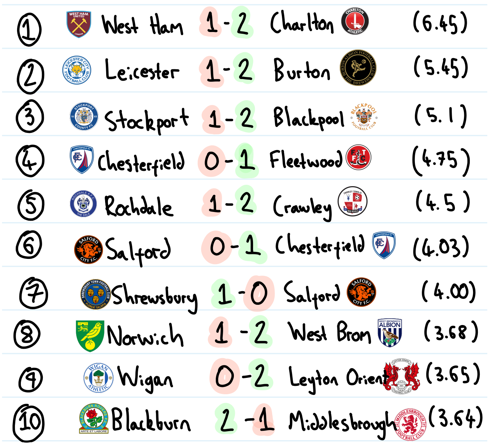

Listed are the 10 biggest surprise results of the 3 opening rounds of EFL fixtures.
To collate this list, I used the betting odds for each eventual result. So far, the bookies have been stung most greatly by West Ham’s round 2 home defeat to Charlton. When creating the list, I chose to exclude all matches that had finished level, as draws are less common results, so have generally higher odds naturally. As can be observed, there have been a host of surprising away victories, combined with the failings of various favourites across the leagues.
2 clubs appear twice in the list; both Salford and Chesterfield have had unpredictable starts to the season. Most damning is Salford, who’ve already been on the end of 2 poor defeats, taking the betting markets by surprise. It’s been an awful, pointless start to the season for the side, who’d gone into the League Two season as favourites for the title. Chesterfield bounced back from an unexpected disappointment at home to Fleetwood to win at Salford themselves. The Spireites' away form may be one to watch.
The bookmakers must have struggled most with League Two so far, as it yielded 4 of these 10 upsets. The fortunes of last season’s relegated sides have also been keeping them busy, with the 2 greatest shocks owing to home defeats for these suffering sides.